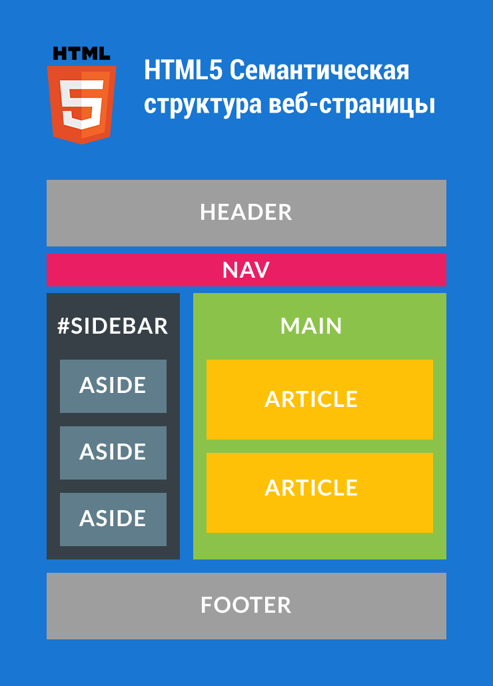

Веб-дизайн (от англ. web design) — отрасль веб-разработки и разновидность дизайна, в задачи которой входит проектирование пользовательских веб-интерфейсов для сайтов или веб-приложений.
проектируют логическую структуру веб-страниц;
продумывают наиболее удобные решения подачи информации;
занимаются художественным оформлением веб-проекта.
В результате пересечения двух отраслей человеческой деятельности грамотный веб-дизайнер должен быть знаком с новейшими веб-технологиями и обладать соответствующими художественными качествами. Большая часть специалистов, работающих в области дизайна, обычно концентрирует в себе такое творческое образование, как студия дизайна.
Веб-дизайнер — сравнительно молодая профессия, и профессиональное образование в области веб-дизайна в России пока не распространено. В связи с увеличением спроса на представительство в Сети растёт и спрос на дизайн сайтов, увеличивается количество веб-дизайнеров. В настоящее время услуги веб-дизайна предоставляют как веб-студии, так и частные лица (веб-дизайнеры, являющиеся фрилансерами).
Вёрстка веб-страниц — создание структуры гипертекстового документа на основе HTML разметки, как правило, при использовании таблиц стилей и клиентских сценариев, таким образом, чтобы элементы дизайна выглядели аналогично макету.
Вёрстка веб-страниц отличается от полиграфической тем, что необходимо учитывать разницу отображения элементов в различных браузерах и разницу в размерах рабочего пространства устройств.
Процесс сложен и имеет творческую основу, ни один из способов не является каноничным и принятым как основа. Все подходы к вёрстке имеют как преимущества, так и недостатки.
Программи́ст — специалист, занимающийся непосредственной разработкой программного обеспечения для различного рода вычислительно-операционных систем.
Прикладные и системные программисты
В настоящее время, как и ранее широко применяется классификация программистов на прикладных и системных. Прикладным называется программист, программы которого предназначены для решения прикладной задачи, удовлетворяющей потребности конечного пользователя и, по замыслу классификации, лежащей вне компьютерной сферы. Системным называется программист, программы которого предназначены для обеспечения работы компьютера и используются другими компьютерными специалистами.
0